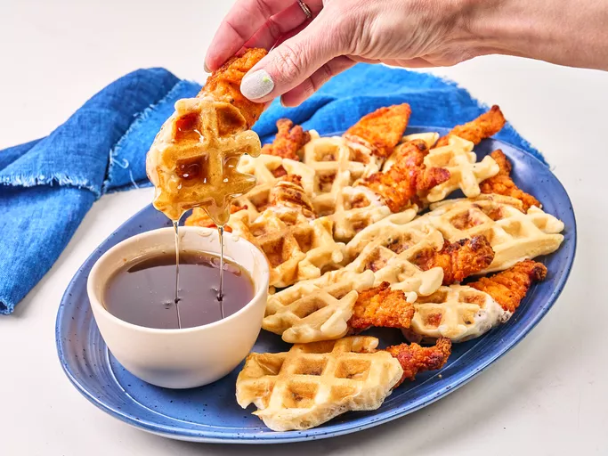

Home
Chicken and Waffle Bites

Description
You only need 3 ingredients to get the full chicken and waffle experience with these shortcut chicken and waffle bites. Lightly breaded chicken tenders are dipped in pancake batter, and popped into a waffle iron until they are crisp and golden. Serve with syrup for dipping.
Ingredients
- 1 (10.6 ounce) jug shake and pour pancake mix, such as Bisquick Shake N Pour
- 1 1/2 pounds frozen fully cooked lightly breaded chicken tenders, such as Just Bare
- cooking spray
- 3/4 cup maple syrup, or as needed for dipping
Steps
- Prepare chicken tenders according to package directions.
- Prepare pancake mix according to instructions. Pour mixture into a bowl.
- Meanwhile, heat up a waffle iron. Spray waffle iron with nonstick spray. Take 1 to 4 chicken tenders at a time, depending on the size of your waffle iron, and dip tenders halfway into pancake batter; place onto the waffle iron. Cook until golden brown.
- Remove from the waffle iron to a plate; continue cooking remaining chicken.
- Serve immediately with syrup for dipping.